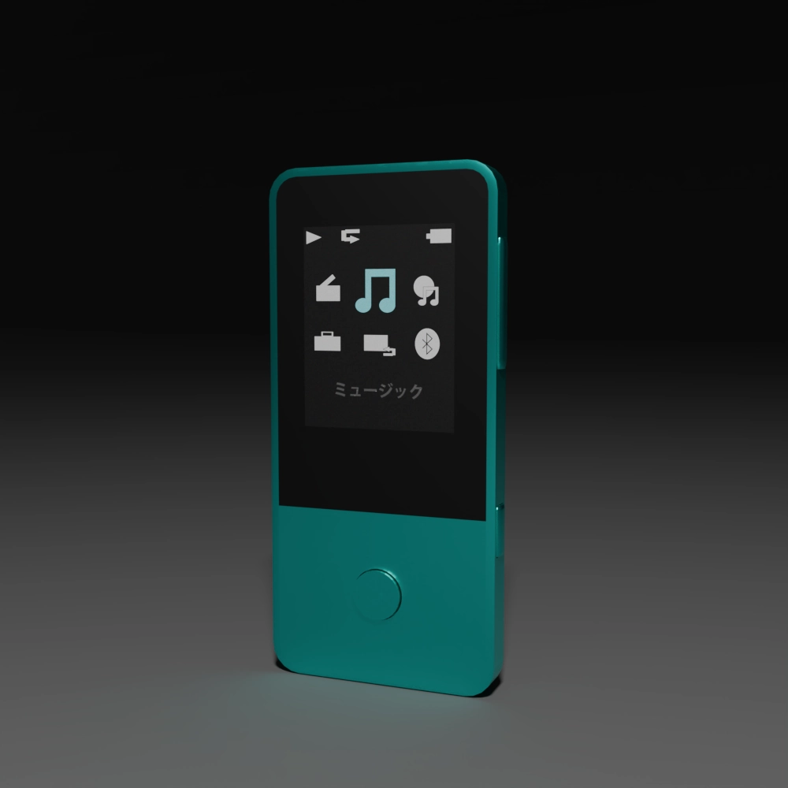

MP3Player

MP3プレーヤーは、音楽ファイルをデジタルで保存・再生できる携帯型オーディオ機器です。MP3をはじめとする圧縮形式に対応しており、 小さな容量で多くの楽曲を持ち運べるのが最大の特徴です。軽量でコンパクトなデザインが多く、通勤・通学・運動中など、場所を選ばず気軽に音楽を楽しめる点が魅力です。 また、パソコンと接続して簡単に曲を転送できるほか、モデルによっては録音機能やFMラジオ、Bluetooth接続にも対応しています。シンプルな使い勝手とコスパの良さから、 スマホとは別に音楽専用機として今も根強い人気があります。
SONYのウォークマンは、高音質・高機能・信頼性の3点に集約されます。長年オーディオ分野をリードしてきたSONYならではの技術により、 ウォークマンは圧縮音源だけでなくハイレゾ音源にも対応し、クリアで臨場感のある音を持ち運べることが魅力です。加えて、ノイズキャンセリングやDSEE（高音域補完技術）など、 音をより良く聴くための独自機能が充実しています。バッテリー持ちも良く、専用音楽プレーヤーとしてスマートフォンよりも集中して音楽を楽しめる点もポイントです。デザインも洗練されており、 「音楽を大切に聴きたい人」にとって、ウォークマンは今も選ばれる価値ある一台です。